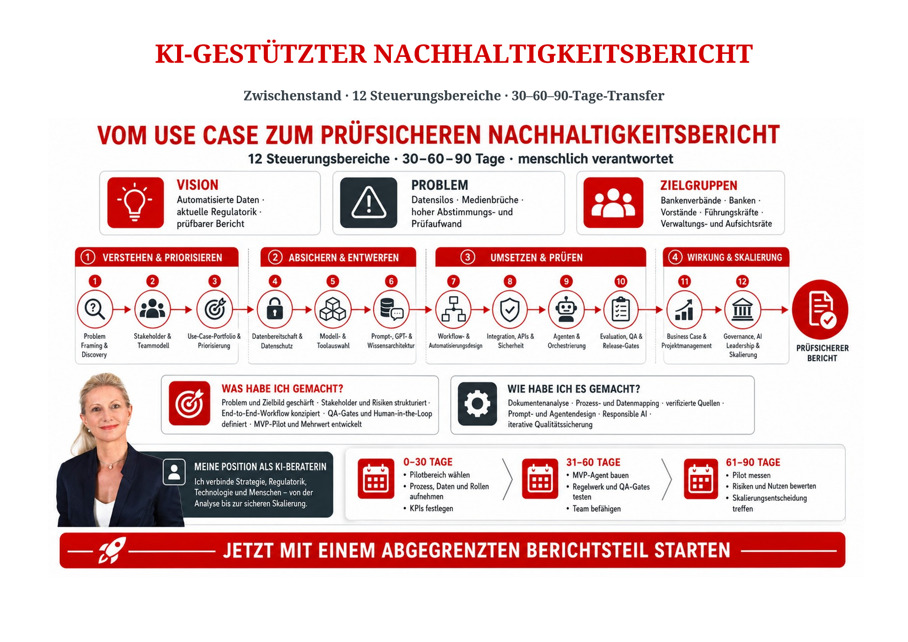

Kompetenzmatrix
Fachlich, organisatorisch, kommunikativ – und KI-gestützt
Fachliche Kompetenzen
- Kenntnisse der Sparkassenorganisation
- Vorstandsstab & Unternehmenskommunikation
- Themenrecherche & strukturierte Aufbereitung
- Bankfachliche Themen sicher einordnen
- Veranstaltungsmanagement
Organisatorische Kompetenzen
- Sitzungen und Veranstaltungen koordinieren
- Informationen bündeln & Fristen steuern
- Strukturiertes Arbeiten & Priorisierung
- Projekt- und Prozessorganisation
- Qualitätsbewusstsein & Sorgfalt
Kommunikative Kompetenzen
- Kommunikation auf allen Ebenen
- Presse- und Öffentlichkeitsarbeit
- Entscheidungsvorlagen, Beschlüsse, Präsentationen
- Verfassen von Reden, Gruß- und Vorworten
- Vernetzung in der Sparkassenorganisation
Persönliche Kompetenzen
- Loyalität, Integrität, Diskretion & Verschwiegenheit
- Belastbarkeit & Zeitdruckkompetenz
- Selbstständigkeit & Eigeninitiative
- Flexibilität & Anpassungsfähigkeit
- Teamfähigkeit & Kooperationsstärke
KI-Kompetenz
- Prompt Engineering & LLM-Kompetenz
- KI-gestützte Recherche und Wissenssynthese
- Automatisierung & Prozessoptimierung
- Responsible AI, Datenschutz & Human-in-the-Loop
KI-Kompetenz: Umsetzung & Orchestrierung
- Vibe Coding & AI-Native Software Development
- Advanced Prompt Engineering & System Design
- Multi-Model LLM Strategy & Orchestration
- Agentic AI & Workflow Automation
- KI-gesteuertes Projekt- & Transformationsmanagement
KI-Kompetenz in der Praxis

Das Sparkasse-FFB-Nachhaltigkeits-Dashboard auf dieser Website ist in Zusammenarbeit mit einem KI-Assistenten entstanden – von der Recherche in den Original-Geschäftsberichten über die Datenstrukturierung bis zur Umsetzung als Web-Anwendung. Ein praktisches Beispiel für die oben genannte KI-Kompetenz.
Vision
KI-generierte Illustration – eine persönliche Zukunftsvision, keine reale Aufnahme. Entstanden mit denselben KI-Werkzeugen, die auch in der Beratung zum Einsatz kommen.
Arbeitsproben & Vision in Bewegung
Ein kurzes KI-generiertes Video als persönliche Zukunftsvision sowie eine echte Arbeitsprobe: das Konzept für einen KI-gestützten Nachhaltigkeitsbericht.

Nur lokal zuverlässig anklickbar (Download der Original-Datei).
Nachhaltigkeit in der Praxis: an den Ladesäulen